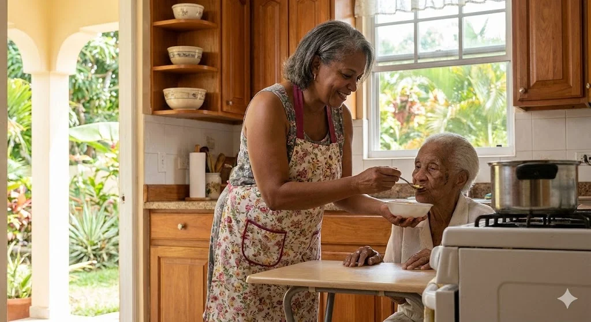
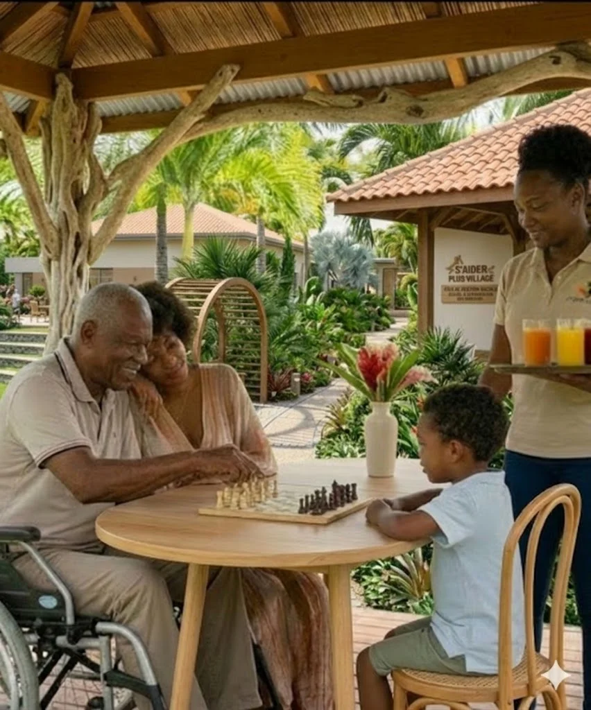
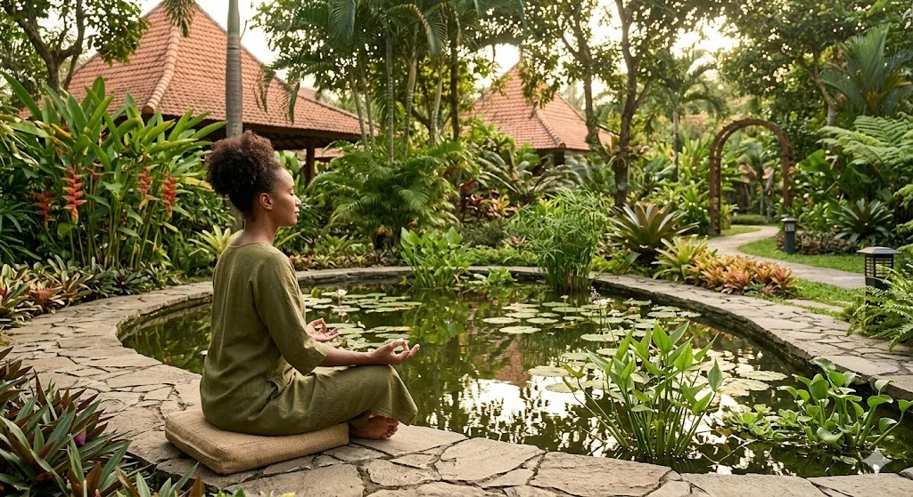
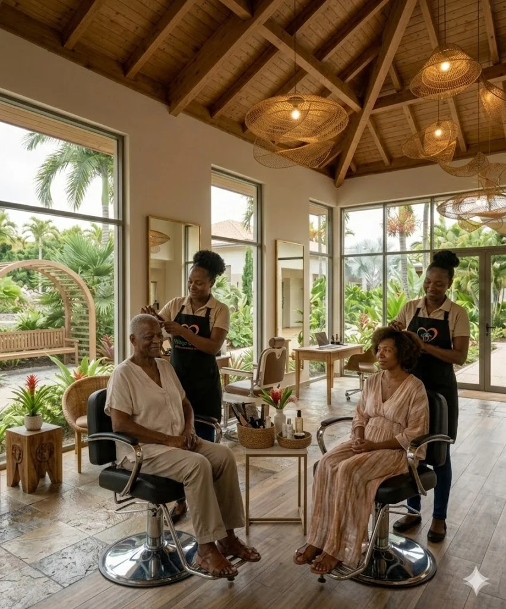
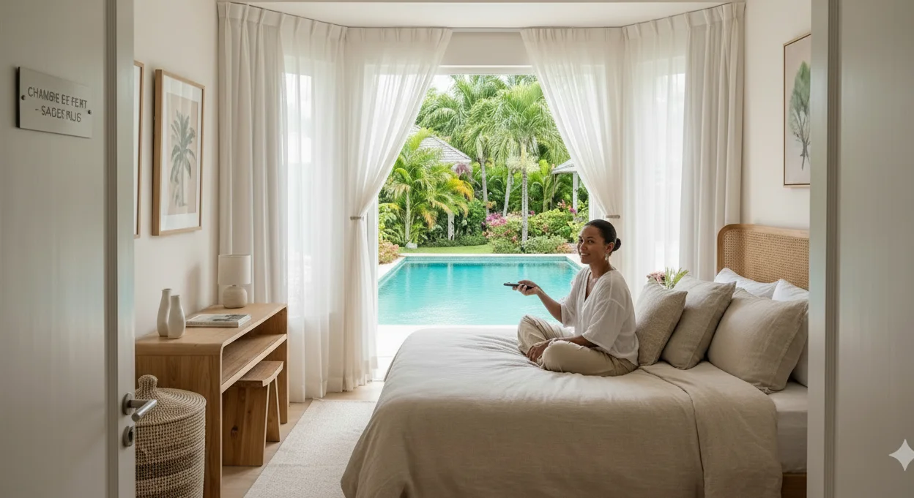
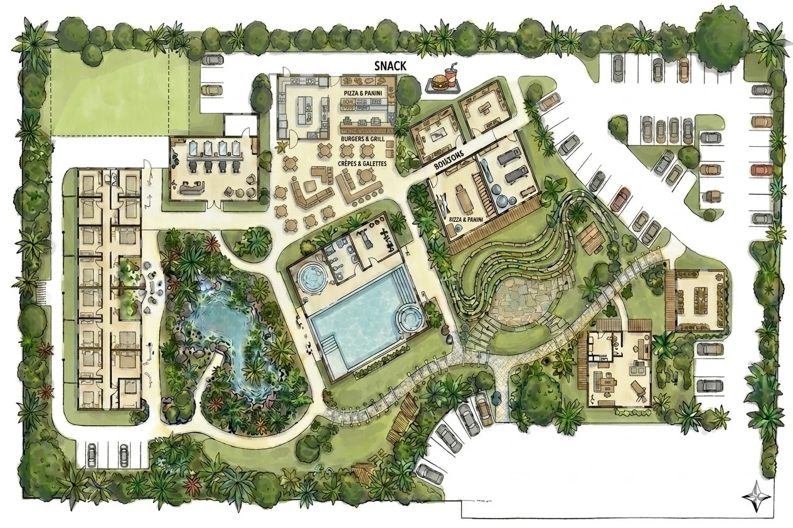

S'AIDER PLUS
Village
Transformer l'art de vivre antillais en infrastructure territoriale du bien-vieillir.

Un défi territorial qui s'accélère
À l'horizon 2030, la Guadeloupe comptera environ 28 000 personnes âgées en situation de dépendance, soit une hausse significative par rapport à 2017.
Voir le projet en détail
Les 5 piliers structurants du Village
S'AIDER PLUS Village repose sur cinq piliers complémentaires qui traduisent une approche globale du bien-vieillir, centrée sur la qualité de vie, la prévention et la dignité.

Vie sociale & culturelle
Lien social, activités intergénérationnelles, ancrage dans les traditions antillaises et événements du territoire. Un pilier qui place la convivialité et la transmission au cœur du bien-vieillir.

Nature & Apaisement
Jardins thérapeutiques tropicaux, espaces extérieurs favorisant la reconnexion à l'environnement naturel et la réduction du stress.

Santé de proximité
Prévention active, coordination des parcours, réduction des ruptures et maintien de l'autonomie au plus près des habitants.

Estime de soi & Dignité
Espaces dédiés au bien-être, à l'expression de soi et à la reconnaissance de l'identité individuelle.

Répit & Récupération
Solutions modulables permettant aux aidants et personnes accompagnées de souffler et de récupérer durablement.
Un tiers-lieu hybride au service du territoire
S'AIDER PLUS Village propose une plateforme territoriale d'orchestration dédiée à la prévention de la fragilité, au soutien des aidants et au maintien de l'autonomie.
Explorer les espaces
Co-construisons demain.
S'AIDER PLUS Village constitue une réponse innovante, structurée et immédiatement opérationnelle aux enjeux du vieillissement. Collectivités, financeurs, opérateurs : construisons ensemble.
Nous contacter